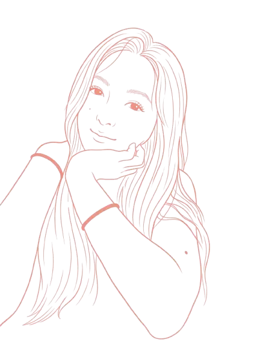

模型服務
OpenAI 或 Azure OpenAI切換到 Azure OpenAI 時，系統會自動使用你指定的固定 Azure 路徑，你只需要填入 API Key。
OpenAI API Key
只會用在這次請求房間照片
手機可直接拍照支援 JPG、PNG。相機按鈕在大多數手機瀏覽器會直接開啟後鏡頭。
快速風格
可先選一種，再微調描述風格示意預覽
自訂描述
補充你想保留或強化的感覺原始圖片
尚未選擇圖片，請直接拍照或從相簿上傳。
支援手機拍照與相簿上傳，保留原始空間格局，直接生成不同風格的室內設計提案。
切換到 Azure OpenAI 時，系統會自動使用你指定的固定 Azure 路徑，你只需要填入 API Key。
支援 JPG、PNG。相機按鈕在大多數手機瀏覽器會直接開啟後鏡頭。
